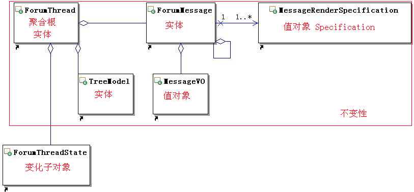

Immutability is easy
Immutability is abstraction. It does not "exist" in nature,World is mutable, world is permanently changing,So it's quite natural for data structures to be mutable that they describe the state of the real or simulated object at a given moment in time. but problems will arise in computer world when:
1.data structures are modified from concurrent threads
2.users provide conficting changes for the same objects
3.a user provide an invalid data and it should be rolled back
how to solve these problems? solutions is :immutable or volatile and synchronized lock.we know lock is enemy of performance, lock is blocking, and volatile has some shortcomings, The only choice is immutable.
so immutable is a performance design pattern, Once it is being constructed, it will forever change,in java all fields in it is "final", no setXXX method that you can change any field. when you publish a immutable object is thread safe.
so if we use immutable pattern to avoid transaction lock such as database lock or java synchronized.
next problem is for programmers how to know which datas is immutable?
that is Value Object of DDD(Domain-driven desgin)：
"An object that represents a descriptive aspect of the domain with no conceptual identity is called a VALUE OBJECT. VALUE OBJECTS are instantiated to represent elements of the design that we care about only for what they are, not who or which they are." [Evans 2003]
the primary difference to me between Entities and Value Objects is identity，If I have two instances to Value Objects with same internal values, they should be considered equal，If you can't make a Value Object
- Immutable
- value equality rather than reference equality
Then it probably isn't a Value Object，
so if a domain expert designs a object is value object, then we know the object is immutable. then software system would be pleased with it.
in scala, they are happy because they can use Immutability + Actor model for concurrency programming, how to implement a immutable value object in Java?
in Java I think we can have a happy concurrency programming by Immutability + ES Model of JdonFramework, here is a immutable class from open source jivejdon:
public class ForumState {
private final AtomicLong threadCount;
private final AtomicLong messageCount;
private final ForumMessage lastPost;
private final Forum forum;
private final SubscribedState subscribedState;
public ForumState(Forum forum, ForumMessage lastPost, long messageCount, long threadCount) {
super();
this.forum = forum;
this.lastPost = lastPost;
this.messageCount = new AtomicLong(messageCount);
this.threadCount = new AtomicLong(threadCount);
this.subscribedState = new SubscribedState(new ForumSubscribed(forum));
}
...
}
|
I use "final" for this value object:ForumState, so these fields in VO never be modified seperately,
if you want to change one of them, you must replcae the whole VO, replacing a object is a atomc operating,
so no need any locks.
according DDD, we need a Factory to manage immutable objects's lifecycle, so I create a Factory for creating the value object ForumState:
| public interface ForumStateFactory { |
|
| void init(Forum forum, ForumMessage lastPost); |
|
| void addNewMessage(Forum forum, ForumMessage newLastPost); |
|
| void addNewThread(Forum forum, ForumMessage newLastPost); |
|
| void updateMessage(Forum forum, ForumMessage forumMessage); |
|
| } |
what is difference this ForumStateFactory with other factory ? no synchronized method,there is a contrast as below:

Immutability always be there. we can find it by Value Object at first. and it can improve our system performance.
|